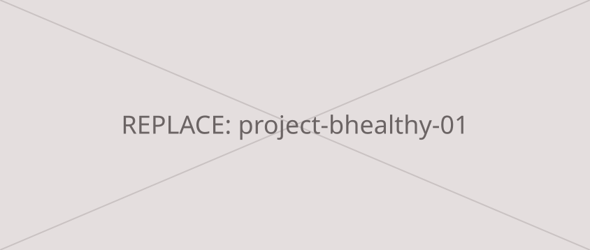
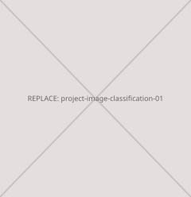
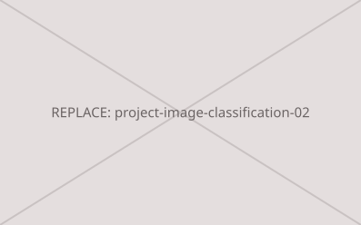
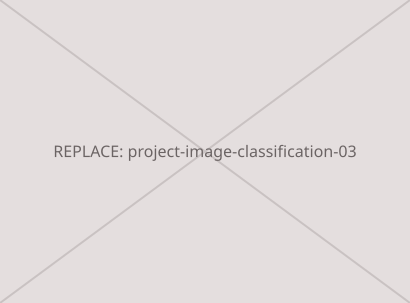
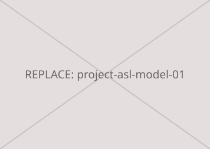
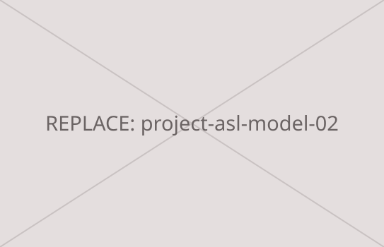

#bhealthy
developed the react frontend for bhealthy during the 2025 aws x bruin ai gen ai summit hackathon. bhealthy is a full-stack web app that generates personalized ucla dining hall meal recommendations using aws bedrock, lambda, and ec2. refined ui elements with html, css, and javascript to improve usability and aesthetics.
Github link here.
#cloud closet
developed a full-stack ios app mvp with a team of three at the 2024 kode with klossy mobile app development camp. used swift to develop cloud closet, a digital closet app that helps users track the clothes they own, prevent buying duplicates, and connect with nearby thrift stores and donation centers. led UI/ux design (see wireframes in design portfolio). focused on back-end development, contributing to implementing key features, like an interactive map and an AI background remover for uploaded pictures of clothing.
see video demo here. Github link here.



#image classification model
Developed ai computer vision model to differentiate between cats and dogs using Python, Keras, and TensorFlow. Performed data cleaning and preprocessing. worked with team to Compile scientific research poster on the most optimized training model and presented findings to the head of Physics Department and CSUDH Master's students.


#asl alphabet recognition model
developed a computer vision model that predicts asl alphabet letters from images using python, scikit-learn, and pandas. the model achieved an overall accuracy rate of 85% on the test set. used confusion matrices to evaluate model’s performance.